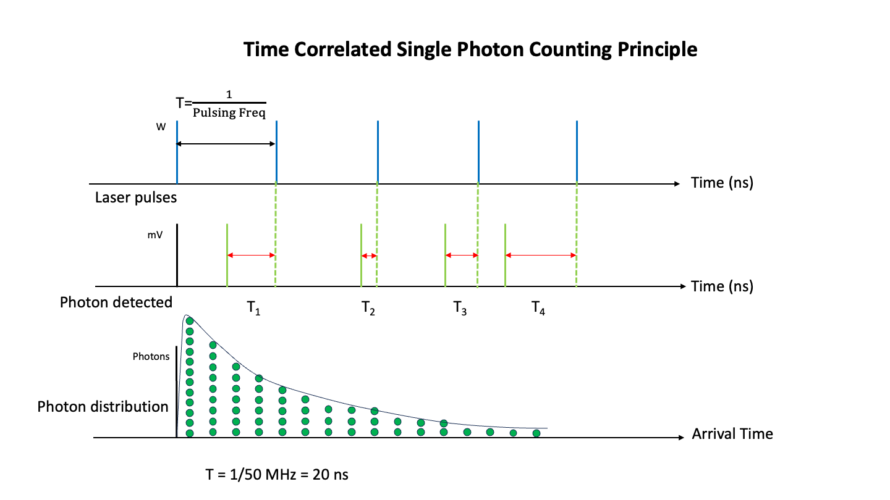

Curve fitting
Curve fitting is a fundamental skill in experimental physics that allows us to extract physical parameters from measured data. In this lecture, we’ll explore how to apply the least-squares method to fit a quadratic function with three parameters to experimental data. It’s worth noting that this approach can be applied to more complex functions or even simpler linear models.
Before diving into the fitting process, it’s essential to consider how to best estimate your model parameters. In some cases, you may be able to derive explicit estimators for the parameters, which can simplify the fitting procedure. Therefore, it’s advisable to carefully consider your approach before beginning the actual fitting process.
For those who want to delve deeper into this subject, you might find it interesting to explore concepts like maximum likelihood estimation. This method offers an alternative approach to parameter estimation and can provide valuable insights in certain scenarios.
Idea
In experimental physics, we often collect data points to understand the underlying physical phenomena. This process involves fitting a mathematical model to the experimental data.
The data typically comes as a series of \(N\) paired points:
| x-data | y-data |
|---|---|
| \(x_{1}\) | \(y_{1}\) |
| \(x_{2}\) | \(y_{2}\) |
| … | … |
| \(x_{N}\) | \(y_{N}\) |
Each point \(\{x_i, y_i\}\) may represent the result of multiple independent measurements. For instance, \(y_1\) could be the mean of \(n\) repeated measurements \(y_{1,j}\) at position \(x_1\):
\[y_1 = \frac{1}{n}\sum_{j=1}^n y_{1,j}\]
When these individual readings have a true (underlying) standard deviation \(\sigma\), the sum of all \(n\) measurements has a variance of \(n\sigma^2\) and a standard deviation of \(\sqrt{n}\sigma\). Consequently, the mean value has an associated error known as the Standard Error of the Mean (SEOM):
\[\sigma_{SEOM} = \frac{\sigma}{\sqrt{n}}\]
This SEOM is crucial in physics measurements—it tells us how precisely we know the mean value.
In practice, we don’t know the true \(\sigma\), so we must estimate it from our data. The estimated variance \(s_1^2\) for the measurements at point \(x_1\) is calculated as:
\[s_1^2 = \frac{1}{n-1} \sum_{j=1}^n (y_{1,j} - y_1)^2\]
This is the sample variance, which uses \(n-1\) in the denominator (Bessel’s correction) instead of \(n\). The factor \(n-1\) accounts for the fact that we estimate the mean \(y_1\) from the same data, which reduces our degrees of freedom by one. The estimated standard deviation is then \(s_1 = \sqrt{s_1^2}\).
For large \(n\), the estimate \(s_1\) approaches the true value \(\sigma\). The estimated standard error of the mean becomes:
\[s_{SEOM} = \frac{s_1}{\sqrt{n}}\]
This statistical framework forms the basis for analyzing experimental data and fitting mathematical models to understand the underlying physics.
Least squares
In experimental physics, we often collect data points to understand the underlying physical phenomena. To make sense of this data, we fit a mathematical model to it. One common method for fitting data is the least squares method.
Why use least squares fitting?
The goal of least squares fitting is to find the set of parameters for our model that best describes the data. This is done by minimizing the differences (or residuals) between the observed data points and the model’s predictions.
Gaussian uncertainty and probability
When we take measurements, there is always some uncertainty. Often, this uncertainty can be modeled using a Gaussian (normal) distribution. This distribution is characterized by its mean (average value) and standard deviation (a measure of the spread of the data).
If we describe our data with a model function, which delivers a function value \(f(x_{i}, \mathbf{a})\) for a set of parameters \(\mathbf{a} = (a_1, a_2, \ldots, a_M)\) at the position \(x_{i}\), the Gaussian uncertainty dictates a probability of finding a data value \(y_{i}\):
\[\begin{equation} p_{y_{i}}=\frac{1}{\sqrt{2\pi}\sigma_{i}}\exp\left(-\frac{(y_{i}-f(x_{i},\mathbf{a}))^2}{2\sigma_{i}^2}\right) \end{equation}\]
Here, \(\sigma_{i}\) represents the uncertainty in the measurement \(y_{i}\).
Combining probabilities for multiple data points
To understand how well our model fits all the data points, we need to consider the combined probability of observing all the data points. This is done by multiplying the individual probabilities:
\[\begin{equation} p(y_{1},\ldots,y_{N})=\prod_{i=1}^{N}\frac{1}{\sqrt{2\pi}\sigma_{i}}\exp\left(-\frac{(y_{i}-f(x_{i},\mathbf{a}))^2}{2\sigma_{i}^2}\right) \end{equation}\]
Maximizing the joint probability
The best fit of the model to the data is achieved when this joint probability is maximized. To simplify the calculations, we take the logarithm of the joint probability:
\[\begin{equation} \ln(p(y_{1},\ldots,y_{N}))=-\frac{1}{2}\sum_{i=1}^{N}\left( \frac{y_{i}-f(x_{i},\mathbf{a})}{\sigma_{i}}\right)^2 - \sum_{i=1}^{N}\ln\left( \sigma_{i}\sqrt{2\pi}\right) \end{equation}\]
The first term on the right side (except the factor 1/2) is the least squared deviation, also known as \(\chi^{2}\):
\[\begin{equation} \chi^{2} =\sum_{i=1}^{N}\left( \frac{y_{i}-f(x_{i},\mathbf{a})}{\sigma_{i}}\right)^2 \end{equation}\]
The second term is just a constant value given by the uncertainties of our experimental data.
Maximum Likelihood Estimation (MLE)
What we have just derived is actually a powerful statistical method called Maximum Likelihood Estimation. Let’s formalize this connection.
The Likelihood Function
The likelihood function \(\mathcal{L}(\mathbf{a})\) is defined as the probability of observing our data, given the model parameters \(\mathbf{a}\):
\[\mathcal{L}(\mathbf{a}) = p(y_1, y_2, \ldots, y_N | \mathbf{a}) = \prod_{i=1}^{N} p(y_i | \mathbf{a})\]
Note the subtle but important shift in perspective: we treat the data as fixed and the parameters as variable. We ask: “Which parameters make our observed data most probable?”
The Log-Likelihood
In practice, we work with the log-likelihood \(\ell(\mathbf{a}) = \ln \mathcal{L}(\mathbf{a})\) for two reasons:
- Numerical stability: Products of many small probabilities can underflow; sums of logarithms don’t
- Mathematical convenience: Products become sums, making derivatives easier
Connection to Least Squares
For Gaussian-distributed measurements, the log-likelihood is:
\[\ell(\mathbf{a}) = -\frac{1}{2}\chi^2 - \sum_{i=1}^{N}\ln(\sigma_i\sqrt{2\pi})\]
Since the second term is constant (independent of \(\mathbf{a}\)), maximizing the log-likelihood is equivalent to minimizing \(\chi^2\):
\[\underset{\mathbf{a}}{\text{argmax}} \; \ell(\mathbf{a}) = \underset{\mathbf{a}}{\text{argmin}} \; \chi^2(\mathbf{a})\]
This is a profound result: least squares fitting is the maximum likelihood estimator for Gaussian errors.
Why MLE Matters
- Theoretical foundation: MLE provides rigorous justification for the least squares method
- Optimal properties: Under mild conditions, MLE estimators are:
- Consistent: converge to true values as \(N \to \infty\)
- Efficient: achieve the lowest possible variance
- Asymptotically normal: uncertainties follow Gaussian statistics for large \(N\)
- Generalization: MLE works for any probability distribution, not just Gaussian:
- Poisson statistics: counting experiments (radioactive decay, photon counting)
- Binomial statistics: success/failure experiments
- Custom distributions: any physical situation with known error distribution
Experimental Example: Fluorescence Lifetime Measurement
A beautiful application of MLE is Time-Correlated Single Photon Counting (TCSPC), used to measure excited state lifetimes of fluorescent molecules.
The Experiment:
- A short laser pulse excites dye molecules to an excited state
- Each molecule decays back to the ground state by emitting a photon
- We record the arrival time \(t_i\) of each detected photon relative to the excitation pulse
- The decay follows an exponential distribution with lifetime \(\tau\)
Experimental procedure:

The Physics:
The probability density for a photon arriving at time \(t\) is:
\[p(t|\tau) = \frac{1}{\tau} e^{-t/\tau}\]
Two Approaches to Extract \(\tau\):
Approach 1: Histogram Fitting (Least Squares)
- Bin the arrival times into a histogram
- Fit the histogram to an exponential using least squares
- Problem: Binning loses information, and bin counts follow Poisson statistics (not Gaussian)
Approach 2: Direct MLE
Write the likelihood for \(N\) photon arrival times \(\{t_1, t_2, \ldots, t_N\}\):
\[\mathcal{L}(\tau) = \prod_{i=1}^{N} \frac{1}{\tau} e^{-t_i/\tau} = \frac{1}{\tau^N} \exp\left(-\frac{1}{\tau}\sum_{i=1}^{N} t_i\right)\]
The log-likelihood is:
\[\ell(\tau) = -N\ln(\tau) - \frac{1}{\tau}\sum_{i=1}^{N} t_i\]
To find the maximum, take the derivative and set it to zero:
\[\frac{d\ell}{d\tau} = -\frac{N}{\tau} + \frac{1}{\tau^2}\sum_{i=1}^{N} t_i = 0\]
Solving for \(\tau\):
\[\boxed{\hat{\tau}_{MLE} = \frac{1}{N}\sum_{i=1}^{N} t_i = \bar{t}}\]
The MLE for the lifetime is simply the mean arrival time!
Why MLE Wins Here:
- No binning required: Uses every photon’s exact arrival time
- Statistically optimal: Achieves the lowest possible uncertainty
- Simple formula: Just compute the mean—no iterative fitting needed
- Works with few photons: Histogram fitting needs many counts per bin; MLE works even with sparse data
The uncertainty on the MLE estimate is:
\[\sigma_{\hat{\tau}} = \frac{\tau}{\sqrt{N}}\]
This example shows the power of MLE: by using the correct probability distribution, we obtain a simple, optimal estimator without any curve fitting at all!
Summary
The least squares method you’re learning is not just a convenient recipe—it’s the statistically optimal approach for Gaussian measurement errors. Understanding its foundation in MLE will help you extend these ideas to more complex situations in your future physics career.
Data
Let’s have a look at the meaning of this equation. Let’s assume we measure the trajectory of a ball that has been thrown at an angle \(\alpha\) with an initial velocity \(v_{0}\). We have collected data points by measuring the height of the ball above the ground at equally spaced distances from the throwing person.
| Loading ITables v2.5.2 from the internet... (need help?) |
The table above shows the measured data points \(y_{i}\) at the position \(x_{i}\) with the associated uncertainties \(\sigma_{i}\).
We can plot the data and expect, of course, a parabola. Therefore, we model our experimental data with a parabola like
\[\begin{equation} y = ax^2 + bx + c \end{equation}\]
where the parameter \(a\) must be negative since the parabola is inverted.
Why is the trajectory a parabola?
For a projectile launched at angle \(\alpha\) with initial speed \(v_0\) (ignoring air resistance), the equations of motion are:
Horizontal (no acceleration): \(x(t) = v_0 \cos(\alpha) \cdot t\)
Vertical (gravity): \(y(t) = y_0 + v_0 \sin(\alpha) \cdot t - \frac{1}{2}g t^2\)
Eliminating time by solving \(t = x / (v_0 \cos\alpha)\) and substituting:
\[y = y_0 + x \tan(\alpha) - \frac{g}{2v_0^2 \cos^2(\alpha)} x^2\]
This is exactly \(y = ax^2 + bx + c\) where:
| Parameter | Physical Meaning |
|---|---|
| \(a = -\frac{g}{2v_0^2 \cos^2(\alpha)}\) | Determines curvature (always negative) |
| \(b = \tan(\alpha)\) | Related to launch angle |
| \(c = y_0\) | Initial height |
From the fitted value of \(a\), we can extract \(g\) if we know \(v_0\) and \(\alpha\), or vice versa.
I have created an interactive plot with an interact widget, as this allows you to play around with the parameters. The value of \(\chi^2\) is also included in the legend, so you can get an impression of how good your fit of the data is.
We have that troubling point at the right edge with a large uncertainty. This could represent a situation where the measurement conditions were worse (e.g., the ball was harder to track at larger distances, or there was more environmental interference). However, since the value of \(\chi^2\) divides the deviation by the uncertainty \(\sigma_{i}\), the weight for this point overall in the \(\chi^2\) is smaller than for the other points. This is exactly how weighted fitting should work: less reliable measurements contribute less to the fit.
\[\begin{equation} \chi^{2}=\sum_{i=1}^{N}\left( \frac{y_{i}-f(x_{i},\mathbf{a})}{\sigma_{i}}\right)^2 \end{equation}\]
You may simply check the effect by changing the uncertainty of the last data points in the error array.
Least square fitting
To find the best fit of the model to the experimental data, we use the least squares method. This method minimizes the sum of the squared differences between the observed data points and the model’s predictions.
Mathematically, we achieve this by minimizing the least squares, i.e., finding the parameters \(\mathbf{a}\) that minimize the following expression:
\[\begin{equation} \frac{\partial\chi^{2}}{\partial a_k}=\sum_{i=1}^{N}\frac{1}{\sigma_{i}^2}\frac{\partial f(x_{i},\mathbf{a})}{\partial a_k}[y_{i}-f(x_{i},\mathbf{a})]=0 \end{equation}\]
This equation must be satisfied for each parameter \(a_k\) in our model.
This kind of least squares minimization is done by fitting software using different types of algorithms.
Derivation: Linear Regression Parameters
For simple cases, we can derive explicit formulas for the fit parameters. Let’s work through the derivation for weighted linear regression with the model:
\[f(x) = a + bx\]
where \(a\) is the intercept and \(b\) is the slope.
Step 1: Write out the \(\chi^2\) expression
\[\chi^2 = \sum_{i=1}^{N} \frac{(y_i - a - bx_i)^2}{\sigma_i^2}\]
Step 2: Take partial derivatives and set to zero
For parameter \(a\): \[\frac{\partial \chi^2}{\partial a} = -2\sum_{i=1}^{N} \frac{y_i - a - bx_i}{\sigma_i^2} = 0\]
For parameter \(b\): \[\frac{\partial \chi^2}{\partial b} = -2\sum_{i=1}^{N} \frac{x_i(y_i - a - bx_i)}{\sigma_i^2} = 0\]
Step 3: Define convenient sums
To simplify notation, we define weighted sums:
\[S = \sum_{i=1}^{N} \frac{1}{\sigma_i^2}, \quad S_x = \sum_{i=1}^{N} \frac{x_i}{\sigma_i^2}, \quad S_y = \sum_{i=1}^{N} \frac{y_i}{\sigma_i^2}\]
\[S_{xx} = \sum_{i=1}^{N} \frac{x_i^2}{\sigma_i^2}, \quad S_{xy} = \sum_{i=1}^{N} \frac{x_i y_i}{\sigma_i^2}\]
Step 4: Rewrite as a system of linear equations (normal equations)
\[aS + bS_x = S_y\] \[aS_x + bS_{xx} = S_{xy}\]
Step 5: Solve for \(a\) and \(b\)
Define the determinant: \(\Delta = S \cdot S_{xx} - S_x^2\)
The solutions are:
\[a = \frac{S_{xx} \cdot S_y - S_x \cdot S_{xy}}{\Delta}\]
\[b = \frac{S \cdot S_{xy} - S_x \cdot S_y}{\Delta}\]
Step 6: Parameter uncertainties
The covariance matrix elements can also be derived analytically:
\[\sigma_a^2 = \frac{S_{xx}}{\Delta}, \quad \sigma_b^2 = \frac{S}{\Delta}, \quad \text{cov}(a,b) = -\frac{S_x}{\Delta}\]
Special case: Unweighted regression (\(\sigma_i = \sigma\) for all \(i\))
When all uncertainties are equal, the \(\sigma^2\) cancels out and we get the familiar formulas:
\[b = \frac{N \sum x_i y_i - \sum x_i \sum y_i}{N \sum x_i^2 - (\sum x_i)^2}\]
\[a = \bar{y} - b\bar{x}\]
where \(\bar{x}\) and \(\bar{y}\) are the sample means.
Why this matters
This derivation shows that for linear models, we can obtain closed-form solutions without iterative optimization. For more complex models (like our parabola), numerical algorithms are needed, which is why we use curve_fit.
Fitting with SciPy
Let’s do some fitting using the SciPy library, which is a powerful tool for scientific computing in Python. We will use the curve_fit method from the optimize sub-module of SciPy.
First, we need to define the model function we would like to fit to the data. In this case, we will use our parabola function:
Next, we need to provide initial guesses for the parameters. These initial guesses help the fitting algorithm start the search for the optimal parameters:
We then call the curve_fit function to perform the fitting:
curve_fit Function
The curve_fit function is used to fit a model function to data. It finds the optimal parameters for the model function that minimize the sum of the squared residuals between the observed data and the model’s predictions.
Parameters
parabola:- This is the model function that you want to fit to the data. In this case,
parabolais a function that represents a quadratic equation of the form ( y = ax^2 + bx + c ).
- This is the model function that you want to fit to the data. In this case,
x_data:- This is the array of independent variable data points (the x-values).
y_data:- This is the array of dependent variable data points (the y-values).
sigma=err:- This parameter specifies the uncertainties (standard deviations) of the y-data points. The
errarray contains the uncertainties for each y-data point. These uncertainties are used to weight the residuals in the least squares optimization.
- This parameter specifies the uncertainties (standard deviations) of the y-data points. The
p0=init_guess:- This parameter provides the initial guesses for the parameters of the model function. The
init_guessarray contains the initial guesses for the parameters ( a ), ( b ), and ( c ). Providing good initial guesses can help the optimization algorithm converge more quickly and accurately.
- This parameter provides the initial guesses for the parameters of the model function. The
absolute_sigma=True:- This parameter indicates whether the provided
sigmavalues are absolute uncertainties. Ifabsolute_sigmais set toTrue, thesigmavalues are treated as absolute uncertainties. Ifabsolute_sigmais set toFalse, thesigmavalues are treated as relative uncertainties, and the covariance matrix of the parameters will be scaled accordingly.
- This parameter indicates whether the provided
When to use each setting:
- Use
absolute_sigma=Truewhen your uncertainties are well-known from calibration, repeated measurements, or manufacturer specifications. - Use
absolute_sigma=Falsewhen your uncertainties are rough estimates. In this case, the covariance matrix will be scaled by the reduced \(\chi^2\), which can compensate for over- or under-estimated uncertainties.
Return Value
The curve_fit function returns two values:
popt:- An array containing the optimal values for the parameters of the model function that minimize the sum of the squared residuals.
pcov:- The covariance matrix of the optimal parameters. The diagonal elements of this matrix provide the variances of the parameter estimates, and the off-diagonal elements provide the covariances between the parameter estimates.
The fit variable contains the results of the fitting process. It is composed of various results, which we can split into the fitted parameters and the covariance matrix:
The ans variable contains the fitted parameters fit_a, fit_b, and fit_c, while the cov variable contains the covariance matrix. Let’s have a look at the fit and the \(\chi^{2}\) value first:
We can then plot the fitted curve along with the original data points and the \(\chi^{2}\) value:
\(\chi^2\) Value and Reduced \(\chi^2\)
The value of \(\chi^2\) gives you a measure of the quality of the fit. We can judge the quality by calculating the expectation value of \(\chi^2\):
\[\begin{equation} \langle \chi^{2}\rangle =\sum_{i=1}^{N} \frac{\langle (y_{i}-f(x_{i},\mathbf{a}) )^2\rangle }{\sigma_{i}^2}=\sum_{i=1}^{N} \frac{\sigma_{i}^2}{\sigma_{i}^2}=N \end{equation}\]
However, this is only approximately correct. More precisely, we need to account for the degrees of freedom \(\nu = N - M\), where \(N\) is the number of data points and \(M\) is the number of fitted parameters. In our case, with 10 data points and 3 parameters (a, b, c), we have \(\nu = 10 - 3 = 7\) degrees of freedom.
The reduced chi-squared is defined as:
\[\begin{equation} \chi^2_\nu = \frac{\chi^2}{\nu} = \frac{\chi^2}{N - M} \end{equation}\]
The expectation value of the reduced chi-squared is:
\[\begin{equation} \langle \chi^2_\nu \rangle = 1 \end{equation}\]
This gives us clear criteria for judging fit quality:
- \(\chi^2_\nu \approx 1\) means the fit is good and uncertainties are correctly estimated.
- \(\chi^2_\nu \gg 1\) means the fit is bad (wrong model or underestimated uncertainties).
- \(\chi^2_\nu \ll 1\) means the uncertainties are overestimated.
Interpreting Reduced \(\chi^2\) in Practice
In real experiments, you will rarely obtain \(\chi^2_\nu = 1.00\) exactly. Here’s a practical guide for interpretation:
| \(\chi^2_\nu\) | Interpretation |
|---|---|
| \(< 0.5\) | Uncertainties likely overestimated |
| \(0.5 - 2.0\) | Generally acceptable |
| \(\approx 1\) | Ideal — good fit with correct uncertainties |
| \(2.0 - 3.0\) | Borderline — investigate further |
| \(> 3.0\) | Poor fit — wrong model or underestimated uncertainties |
Example: What does \(\chi^2_\nu = 2\) mean?
A value of \(\chi^2_\nu = 2\) is borderline but not necessarily bad. With \(\nu = 7\) degrees of freedom, the probability of obtaining \(\chi^2 \geq 14\) by chance is about 5%. This could indicate:
- Slightly underestimated uncertainties — error bars might be ~30% too small (since \(\sqrt{2} \approx 1.4\))
- Model imperfections — the parabola might not capture all the physics
- Outliers — one or two data points pulling the fit off
- Statistical fluctuation — 5% of experiments will show this even with correct model and uncertainties
For a first-semester lab course, \(\chi^2_\nu = 2\) is acceptable. You wouldn’t reject the model based on this value alone, but you should examine the residuals for systematic patterns.
It is really important to have a good estimate of the uncertainties and to include them in your fit. If you include the uncertainties in your fit, it is called a weighted fit. If you don’t include the uncertainties (meaning you keep them constant), it is called an unweighted fit.
For our fit above, we obtain a reduced \(\chi^2\) around 2, which is borderline acceptable. The model fits reasonably well, though there may be slight underestimation of uncertainties or minor model imperfections.
Residuals
Another way to assess the quality of the fit is by looking at the residuals. There are several types of residuals, each useful in different contexts:
1. Absolute residuals — the raw deviation of data from the model: \[\begin{equation} r_i = y_i - f(x_{i},\mathbf{a}) \end{equation}\]
2. Normalized (weighted) residuals — scaled by the measurement uncertainty: \[\begin{equation} r_i^{\text{norm}} = \frac{y_i - f(x_{i},\mathbf{a})}{\sigma_i} \end{equation}\] For a good fit with correct uncertainties, these should be approximately standard normal distributed (mean 0, standard deviation 1).
3. Relative (percentage) residuals — useful when comparing across different scales: \[\begin{equation} r_i^{\text{rel}} = 100 \times \frac{y_i - f(x_{i},\mathbf{a})}{y_i} \quad [\%] \end{equation}\]
Importance of Residuals
Residuals are important because they provide insight into how well the model fits the data. If the residuals show only statistical fluctuations around zero, then the fit and likely also the model are good. However, if there are systematic patterns in the residuals, it may indicate that the model is not adequately capturing the underlying relationship in the data.
Visualizing Residuals
Let’s visualize the different types of residuals to better understand their distribution.
The normalized residuals are particularly useful: for a good fit, most points should fall within ±1 (gray dashed lines), and approximately 95% should fall within ±2.
Common Patterns in Residuals
Random Fluctuations Around Zero:
- If the residuals are randomly scattered around zero, it suggests that the model is a good fit for the data.
Systematic Patterns:
- If the residuals show a systematic pattern (e.g., a trend or periodicity), it may indicate that the model is not capturing some aspect of the data. This could suggest the need for a more complex model.
Increasing or Decreasing Trends:
- If the residuals increase or decrease with \(x\), it may indicate heteroscedasticity (non-constant variance) or that a different functional form is needed.
Covariance Matrix
In the previous sections, we discussed how to fit a model to experimental data and assess the quality of the fit using residuals. Now, let’s take a closer look at the uncertainties in the fit parameters and how they are related to each other. This is where the covariance matrix comes into play.
Purpose of the Covariance Matrix
The covariance matrix provides important information about the uncertainties in the fit parameters and how these uncertainties are related to each other. It helps us understand the precision of the parameter estimates and whether the parameters are independent or correlated.
Understanding Covariance
Covariance is a measure of how much two random variables change together. If the covariance between two variables is positive, it means that they tend to increase or decrease together. If the covariance is negative, it means that one variable tends to increase when the other decreases. If the covariance is zero, it means that the variables are independent.
Covariance Matrix in Curve Fitting
When we fit a model to data, we obtain estimates for the parameters of the model. These estimates have uncertainties due to the measurement errors in the data. The covariance matrix quantifies these uncertainties and the relationships between them.
For a model with three parameters \((a, b, c)\), the covariance matrix is a \(3 \times 3\) matrix that looks like this:
\[\begin{equation} {\mathrm{cov}}(p_{i}, p_{j}) = \begin{bmatrix} \sigma_{aa}^{2} & \sigma_{ab}^{2} & \sigma_{ac}^{2} \\ \sigma_{ba}^{2} & \sigma_{bb}^{2} & \sigma_{bc}^{2} \\ \sigma_{ca}^{2} & \sigma_{cb}^{2} & \sigma_{cc}^{2} \end{bmatrix} \end{equation}\]
The diagonal elements provide the variances (squared uncertainties) of the fit parameters, while the off-diagonal elements describe the covariances between the parameters.
Example
Let’s calculate the covariance matrix for our fitted model and interpret the results.
Extracting Parameter Uncertainties
The most practical use of the covariance matrix is to extract the uncertainties of the fitted parameters. The diagonal elements give us the variances, so we take the square root to get the standard deviations:
Interpreting the Covariance Matrix
The covariance matrix provides valuable information about the uncertainties in the fit parameters:
- Diagonal Elements: The diagonal elements represent the variances of the parameters. The square root of these values gives the standard deviations (uncertainties) of the parameters.
- Off-Diagonal Elements: The off-diagonal elements represent the covariances between the parameters. If these values are large, it indicates that the parameters are correlated.
Generating Synthetic Data
To better understand the covariance matrix, let’s generate synthetic data and fit the model to each dataset. This will help us visualize the uncertainties in the parameters.
Each gray curve represents a fit to one synthetic dataset. The spread of these curves visualizes the uncertainty in our model parameters.
Correlation Matrix
To better understand the relationships between the parameters, we can normalize the covariance matrix to obtain the correlation matrix. The correlation matrix has values between -1 and 1, where 1 indicates perfect positive correlation, -1 indicates perfect negative correlation, and 0 indicates no correlation.
Visualizing the Covariance and Correlation
Let’s visualize the covariance and correlation between the parameters using scatter plots.
By examining the covariance and correlation matrices, we can gain a deeper understanding of the uncertainties in the fit parameters and how they are related to each other.
Improving the Model
If we find that the parameters are highly correlated, we might want to find a better model containing more independent parameters. For example, we can write down a different model:
\[\begin{equation} y = a(x - b)^2 + c \end{equation}\]
This model also contains three parameters, but the parameter \(b\) directly refers to the maximum of our parabola, while the parameter \(a\) denotes its curvature.
We see from the covariance matrix that the new model has a smaller correlation of the parameters with each other.
This is also expressed by our correlation matrix.
By examining the covariance and correlation matrices, we can gain valuable insights into the uncertainties in the fit parameters and how to improve our model.
Common Pitfalls in Curve Fitting
Before we summarize, let’s discuss common mistakes that students (and researchers!) make when fitting data. Being aware of these pitfalls will help you avoid them in your own work.
Pitfall 1: Ignoring Measurement Uncertainties
The mistake: Using unweighted fits when uncertainties are known and vary across data points.
Why it matters: Without proper weighting, points with large uncertainties influence the fit as much as precise measurements. This leads to suboptimal parameter estimates.
Example: In our trajectory data, the last point has a much larger uncertainty. An unweighted fit would try to pass close to this point, even though we have less confidence in it.
Pitfall 2: Bad Initial Guesses
The mistake: Providing initial parameter guesses that are far from the true values.
Why it matters: Fitting algorithms search for minima in the \(\chi^2\) landscape. Poor initial guesses can lead to: - Convergence to local minima instead of the global minimum - Failure to converge at all - Very slow convergence
How to avoid it: - Plot your data first and estimate parameters visually - Use physical intuition (e.g., for a parabola, estimate the vertex position) - Try multiple initial guesses and compare results
Pitfall 3: Using the Wrong Model
The mistake: Fitting data with a model that doesn’t capture the underlying physics.
Why it matters: Even a “good” fit (low \(\chi^2\)) with the wrong model gives meaningless parameters.
How to detect it: - \(\chi^2_\nu \gg 1\) suggests the model is inadequate - Systematic patterns in residuals indicate missing physics - Parameters that don’t make physical sense
Example: Fitting exponential decay with a linear model will show clear systematic residuals.
Pitfall 4: Overfitting
The mistake: Using too many parameters to fit limited data.
Why it matters: A model with many parameters can fit noise, not just the underlying signal. This leads to: - Poor predictive power - Unreliable parameter estimates - Very large parameter uncertainties
Rule of thumb: You need significantly more data points than parameters. A model with \(M\) parameters and only \(M+1\) data points is poorly constrained.
Pitfall 5: Ignoring Residuals
The mistake: Only looking at \(\chi^2\) without examining residuals.
Why it matters: \(\chi^2\) alone doesn’t tell you if the fit captures the physics. Residuals reveal: - Systematic deviations (wrong model) - Outliers (bad data points) - Heteroscedasticity (uncertainty varies with x)
Best practice: Always plot residuals after fitting!
Pitfall 6: Forgetting About Correlations
The mistake: Reporting parameter uncertainties without considering correlations.
Why it matters: If parameters are highly correlated: - Individual uncertainties may be misleading - The “allowed” parameter region is not a simple box but an ellipse - A different parameterization might be more meaningful
Example: For our parabola \(y = ax^2 + bx + c\), changing \(a\) requires changing \(b\) to maintain a good fit. The vertex parameterization \(y = a(x-b)^2 + c\) has less correlation.
Pitfall 7: Not Checking Units
The mistake: Mixing up units or forgetting to convert.
Why it matters: Fitting software doesn’t know about units. If your x-data is in milliseconds but you expect the lifetime in seconds, your result will be off by a factor of 1000.
Best practice: - Convert all data to SI units before fitting - Check that fitted parameters have sensible magnitudes - Verify units in your model function
Quick Diagnostic Checklist
Before trusting your fit results, verify:
Summary
In this lecture, we covered the essential concepts of curve fitting for experimental physics:
Key Concepts
Least Squares Method: We minimize the sum of squared deviations between data and model, weighted by measurement uncertainties: \[\chi^{2} =\sum_{i=1}^{N}\left( \frac{y_{i}-f(x_{i},\mathbf{a})}{\sigma_{i}}\right)^2\]
Reduced Chi-Squared: The proper metric for fit quality is \(\chi^2_\nu = \chi^2/(N-M)\), where \(N\) is the number of data points and \(M\) is the number of parameters. A good fit has \(\chi^2_\nu \approx 1\).
Residuals: Always examine residuals after fitting. Look for:
- Random scatter around zero (good)
- Systematic patterns (suggests wrong model)
- Trends with x (suggests missing physics)
Covariance Matrix: Provides uncertainties on fitted parameters (diagonal elements) and correlations between parameters (off-diagonal elements).
Correlation Matrix: Normalized covariance showing how parameters depend on each other. High correlations may suggest a better parameterization exists.
Practical Checklist for Curve Fitting
When fitting experimental data, follow these steps:
- Define your model based on physical understanding
- Provide reasonable initial guesses for parameters
- Include measurement uncertainties (weighted fit)
- Check \(\chi^2_\nu\) — should be close to 1
- Examine residuals — should show no systematic patterns
- Extract parameter uncertainties from the covariance matrix
- Check parameter correlations — consider reparameterization if correlations are high
Common Pitfalls to Avoid
- Ignoring uncertainties: Always use weighted fits when uncertainties are known
- Wrong model: A bad \(\chi^2_\nu\) often indicates the model doesn’t capture the physics
- Overestimated uncertainties: If \(\chi^2_\nu \ll 1\), your error bars may be too large
- Correlated parameters: High correlations make individual parameter values less meaningful
- Poor initial guesses: Can lead to convergence to local minima instead of the global minimum